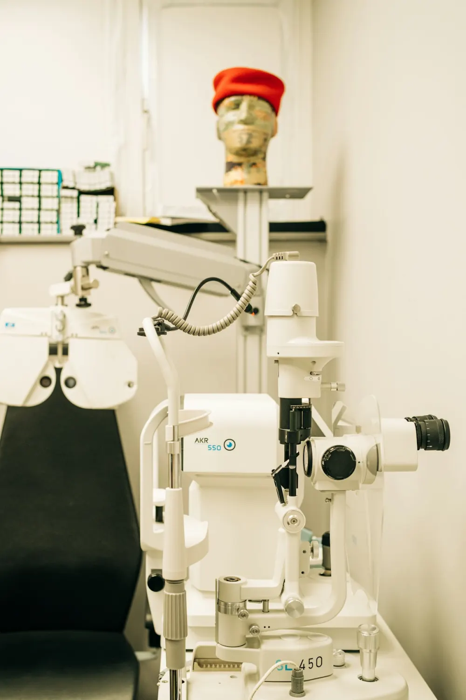
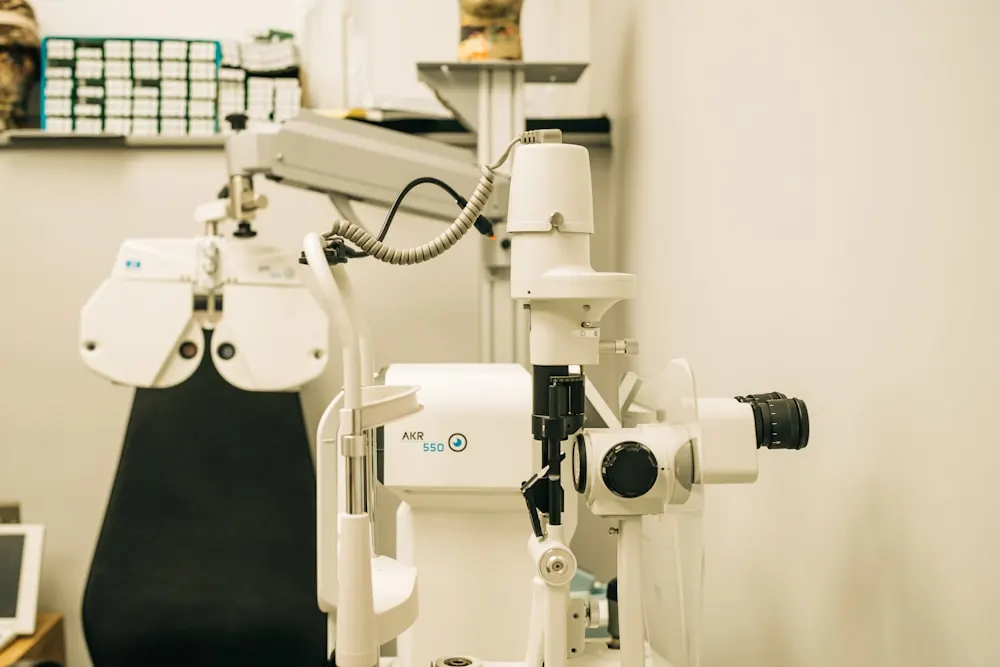
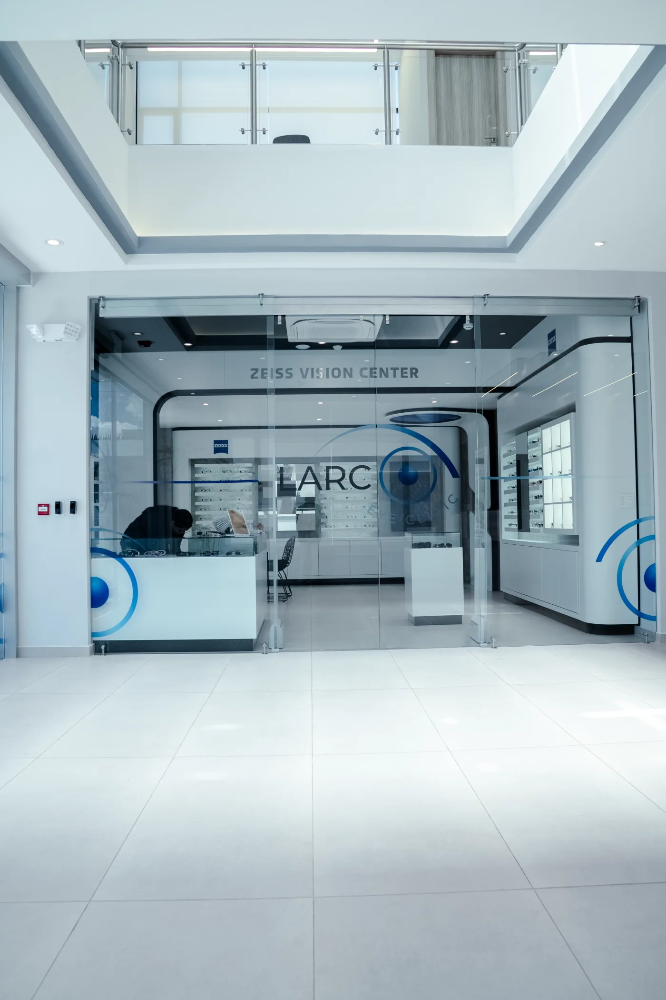

Queratocono
Es una enfermedad degenerativa que deforma y adelgaza progresivamente la córnea, provocando visión distorsionada. Aparece en la juventud y es especialmente frecuente en Ecuador. Detectarlo a tiempo es clave para frenar su avance.
Córnea, catarata, retina y vítreo, glaucoma, cirugía refractiva, óptica y baja visión. Cada área con diagnóstico de precisión y tratamiento a cargo de nuestros especialistas.
Es una enfermedad degenerativa que deforma y adelgaza progresivamente la córnea, provocando visión distorsionada. Aparece en la juventud y es especialmente frecuente en Ecuador. Detectarlo a tiempo es clave para frenar su avance.
Tratamientos para frenar y corregir el queratocono. El crosslinking aplica luz ultravioleta sobre la córnea para endurecerla y detener su deformación. Los anillos intraestromales, implantados con láser, regularizan la forma de la córnea en pacientes que no toleran los lentes de contacto. El Pentacam nos permite decidir cuál conviene en cada caso.
Es el crecimiento de un tejido sobre la córnea, asociado a la exposición solar, el polvo y el viento. Puede afectar la estética del ojo y, si avanza, la visión. Su tratamiento es quirúrgico, ambulatorio y de bajo riesgo: se retira el pterigión y se coloca un injerto de conjuntiva, la técnica que menos recidivas presenta. El objetivo es devolver al ojo su aspecto blanco y sano en pocas semanas.
Reemplaza el tejido corneal dañado cuando la córnea pierde su transparencia (por queratocono avanzado, infecciones, herpes o distrofia de Fuchs) y no hay otra forma de recuperar la visión. Es un procedimiento ambulatorio con anestesia local. Las técnicas actuales conservan parte del tejido del paciente, reduciendo el riesgo de rechazo, y el láser de femtosegundo permite cortes exactos tanto en la córnea donante como en la receptora. Somos un centro acreditado por el INDOT para trasplante de córnea.
Es la pérdida de transparencia del cristalino, el lente natural del ojo, lo que vuelve la visión borrosa. Aparece principalmente con la edad y es la principal causa de ceguera en el mundo. Su tratamiento es quirúrgico: se reemplaza el cristalino por un lente intraocular en un procedimiento ambulatorio, sin hospitalización y con anestesia en gotas.
El láser realiza las incisiones sin bisturí, crea una abertura perfectamente regular y centrada donde se implanta el lente intraocular y fragmenta la catarata antes de aspirarla, con menos energía. El resultado es una cirugía más segura, exacta y reproducible entre ambos ojos. Según el lente elegido, el paciente puede recuperar la visión de lejos, intermedia (computador) y de cerca (lectura).
Ocurre cuando la retina se separa del fondo del ojo y constituye una urgencia oftalmológica. Puede manifestarse con destellos de luz, manchas volantes nuevas o una sombra en el campo visual. Requiere atención inmediata para evitar la pérdida de visión.
Es una complicación de la diabetes que daña los vasos sanguíneos de la retina. Al inicio no da síntomas, por lo que el control periódico es indispensable. Detectada a tiempo, es prevenible; sin tratamiento, puede llevar a la ceguera.
Trastorno asociado a la edad que deteriora lentamente la visión central, dificultando leer y distinguir detalles finos. Es más común después de los 60 años. Su detección temprana permite frenar su progresión y proteger la visión.
Una pequeña rotura en el centro de la retina que afecta directamente la visión central: cuesta reconocer rostros o aparece una mancha en el centro de lo que se mira. Se trata con cirugía (vitrectomía) y detectarlo a tiempo hace la diferencia.
Una fina capa de tejido que se forma sobre la mácula y la arruga, haciendo que las líneas rectas se vean torcidas o las imágenes deformadas. Cuando afecta la calidad de vida, se retira mediante vitrectomía.
Medicamentos anti-VEGF que se aplican dentro del ojo para frenar el crecimiento de vasos sanguíneos anormales. Son el tratamiento de elección en la degeneración macular húmeda y en el edema macular, a menudo asociado a la retinopatía diabética. Se realizan de forma ambulatoria, con anestesia en gotas y una aguja muy fina; suelen requerir varias aplicaciones y un control obligatorio al día siguiente. El médico tratante elige el medicamento adecuado para cada caso.
Cirugía en la que se retira el humor vítreo, el gel que llena el interior del ojo, para reparar la retina desde dentro. Se indica en el desprendimiento de retina, el agujero macular, la membrana epirretiniana, las hemorragias por diabetes y la extracción de cuerpos extraños.

Utiliza luz láser para sellar vasos sanguíneos y desgarros de la retina, evitando que la visión siga deteriorándose. Se usa en la retinopatía diabética, los desgarros de retina y otras enfermedades vasculares del ojo.
Uno de los tratamientos más modernos para el edema macular: ofrece buena recuperación visual y puede disminuir el número de inyecciones intraoculares que necesita el paciente.

Es una enfermedad que daña el nervio óptico, generalmente por un aumento de la presión ocular, y puede llevar a una pérdida irreversible de la visión. Avanza sin dolor ni síntomas, por lo que se lo conoce como el ladrón silencioso de la vista. La detección temprana y el seguimiento —con campimetría, OCT y control de la presión— son fundamentales para controlarla. Es importante no suspender las gotas indicadas: abandonarlas es una de las principales causas de progresión.
Procedimientos láser que ayudan a controlar la presión ocular. El láser transescleral se utiliza en casos severos como el glaucoma neovascular, una forma secundaria de glaucoma de ángulo cerrado.
Dificultad para ver con nitidez de lejos, mientras la visión de cerca se mantiene clara. Se debe a que la imagen se enfoca delante de la retina y no sobre ella. Puede corregirse con lentes o mediante cirugía refractiva.
Dificultad para enfocar los objetos cercanos, y en casos mayores también los lejanos. Ocurre cuando la imagen se enfoca detrás de la retina. Se corrige con lentes o mediante cirugía refractiva.
Visión borrosa o distorsionada a cualquier distancia, causada por una curvatura irregular de la córnea. Suele acompañar a la miopía o la hipermetropía. Puede corregirse con lentes o cirugía refractiva.
Corrige la miopía, la hipermetropía y el astigmatismo remodelando la córnea con láser. Un láser de femtosegundo crea una fina lámina en la córnea y el láser excímer corrige la graduación en pocos segundos. Es una técnica precisa y segura, con recuperación visual casi inmediata. Antes de operar, los exámenes confirman que el paciente cumple todos los requisitos de seguridad.

Medición completa de la vista y elaboración de lentes con tecnología ZEISS, con la misma precisión con la que trabajamos en consulta.
Cuando, a pesar de cirugías e inyecciones, la visión no se recupera lo suficiente, nuestros especialistas en baja visión diseñan una luna personalizada con parámetros milimétricos para aprovechar al máximo la visión que el paciente conserva.
Una consulta oftalmológica integral es el punto de partida para definir el diagnóstico y el tratamiento que corresponde a cada paciente.